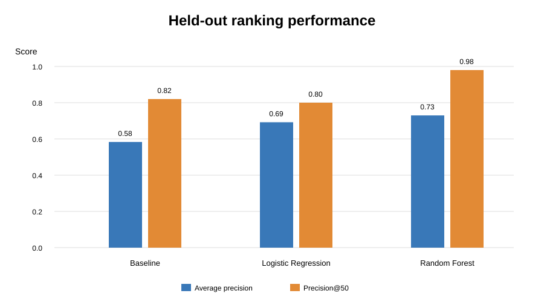
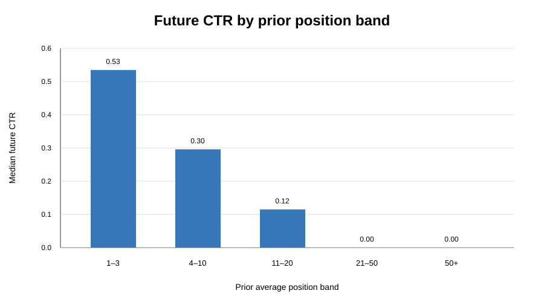

What this study asks
This study asks whether prior search-performance signals can rank content items that will under-capture clicks in a subsequent 30-day period. It uses the pseudonymized FlyRank ML Internship warehouse and aggregates daily search observations into client-content features over 2 March–30 April 2026. A position-adjusted rule is compared with Logistic Regression and Random Forest using a client-grouped holdout and a future CTR outcome defined from training-client position bands. The measured model-versus-baseline results will be inserted from the executed capstone notebook; no performance result is claimed before that run. The intended output is a reason-coded human-review queue, not an automatic publishing decision or a causal estimate of metadata changes.
01 · Introduction / problem statement
Editors have limited time. A useful search workflow should help them decide which visible content items deserve a closer look, while avoiding comparisons between pages that rank in very different positions.
The decision in this study is which page to review first, not which page is guaranteed to improve after an edit. The unit is a pseudonymous client-content pair. The output is a ranked review queue with a short reason code. A false positive wastes editorial time; a false negative may leave a plausible opportunity undiscovered.
Can signals observed in the prior 60 days rank items with below-benchmark CTR in the next 30 days better than a transparent position-adjusted rule?
02 · Data
The analysis uses the gated FlyRank/internship-warehouse release, build flyrank_pseudonymized_warehouse_release_v20260703, from the central data warehouse. The daily fact table has a documented grain of report date × client × content item, and the release covers 27 January 2025 through 30 June 2026.
| Element | Definition |
|---|---|
| Source table | fact_content_daily_performance |
| Feature window | 2 March–30 April 2026 (60 days) |
| Outcome window | 1–31 May 2026 (30 days) |
| Decision grain | Client-content pair |
| Eligibility | At least 500 prior-window impressions and 100 outcome-window impressions |
DuckDB aggregates remote Parquet data before pandas receives the compact feature frame. Query-level data is excluded because its fixed 90-day window does not align cleanly with this decision point. GA4 engagement is excluded to keep the question focused on search CTR and avoid mixing measurement-availability regimes. Client and content hashes are used only for grouping and local reconciliation, never as model features. No client names, domains, URLs, titles, private queries, credentials or raw exports are published.
03 · Methodology
Features
Prior-window features include total impressions and clicks, CTR, separate recent-30 and older-30 CTR, impression change, average search position, position variability and days with impressions. All are available before 1 May 2026.
Outcome definition
For each prior-position band, the 25th percentile of positive future CTR is calculated using training clients only. An eligible item is labelled under-capture when its future CTR falls below that band-specific threshold. The test set uses the training-derived thresholds; it does not define its own benchmark.
Baseline and models
The baseline ranks by prior impressions multiplied by the positive-CTR position-band gap. The learned comparisons are Logistic Regression and Random Forest. All methods are evaluated on the same held-out rows.
Validation and leakage controls
A 75/25 GroupShuffleSplit holds out entire clients (seed 42). Feature and target windows are adjacent and non-overlapping. Future clicks, impressions, CTR, target labels and identifiers are excluded from model inputs. Average precision and Precision@50 are primary ranking metrics; ROC AUC, recall and F1 are secondary. The test base rate is reported alongside the metrics.
Position-band thresholds are empirical reference points, not universal Google CTR curves. A below-benchmark outcome is a review signal, not proof that a title or description is defective.
04 · Results
The notebook and paper structure are prepared, but the gated warehouse run must be completed in Colab using your HF_TOKEN. This page will populate from the aggregate-only docs/assets/capstone_results.json generated by that run. No metrics have been invented.
Model comparison

Future CTR by prior position

05 · Limitations & honest framing
- The study uses one feature/outcome window and one client-grouped holdout. It does not establish stability across seasons, markets or future releases.
- The target is a constructed under-capture proxy based on training-client CTR quartiles, not an editorially adjudicated label.
- Position averages can hide query-level variation. The query table was excluded because its fixed window does not align with this design.
- Low CTR can reflect query intent, brand mix, SERP features, demand changes, content format or noise. It is not automatically a metadata problem.
- Observational data cannot show that changing a title, description or page will cause clicks to increase.
- The model's probabilities and scores are ranking aids, not calibrated business value or guaranteed impact.
06 · Ranked recommendations / action playbook
The operational recommendation is to review the highest-ranked eligible items first, with a human checking the reason and surrounding context before any change.
| Priority signal | Suggested human action | Required check |
|---|---|---|
| High model score + meaningful prior impressions | Review snippet and query intent | Confirm search intent and SERP context; do not assume metadata is the cause |
| Low CTR relative to prior-position cohort | Inspect title, description and result presentation | Check brand mix, SERP features and query mix where authorised |
| Low volume or unstable position | Monitor rather than edit immediately | Wait for more observations; avoid overreacting to sparse data |
Only aggregate counts and metrics are published here. The row-level ranked queue remains a local working artifact and is not embedded in this public page.
07 · Reproducibility
The full analysis is in the capstone notebook. It installs DuckDB, pandas, NumPy, scikit-learn and Matplotlib; reads the gated Parquet release through DuckDB; fixes the random seed at 42; and writes aggregate public results plus SVG charts under docs/assets/. A Hugging Face read token is required in Colab Secrets as HF_TOKEN and must never be committed.
Capstone notebook · Source repository · ML-04 data contract · ML-07 baseline notebook
08 · Acknowledgments & data credit
Built on the FlyRank ML Internship dataset. The author thanks the FlyRank internship team for providing a pseudonymized research release and learning materials.